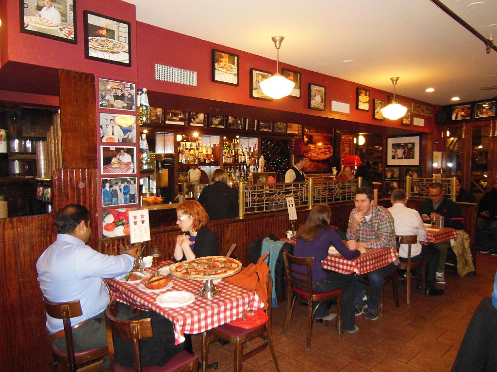

Lombardi's
Tucked on the corner of Mott and Spring Streets in Little Italy, Lombardi's is credited as America's very first pizzeria, founded by Gennaro Lombardi in 1905. The spot is famous for its large pies with smoky, crisp crusts baked in a coal-and-gas oven, generously topped with balanced tomato sauce, whole-milk mozzarella, and classic toppings like sweet Italian sausage. With red-and-white checkered tablecloths and framed family photos lining the red walls, the dining room exudes classic, old-school New York charm. Keep in mind that the restaurant is cash-only—while there is an ATM inside, bringing cash ahead of time will save you the withdrawal fee.
View on Google Maps